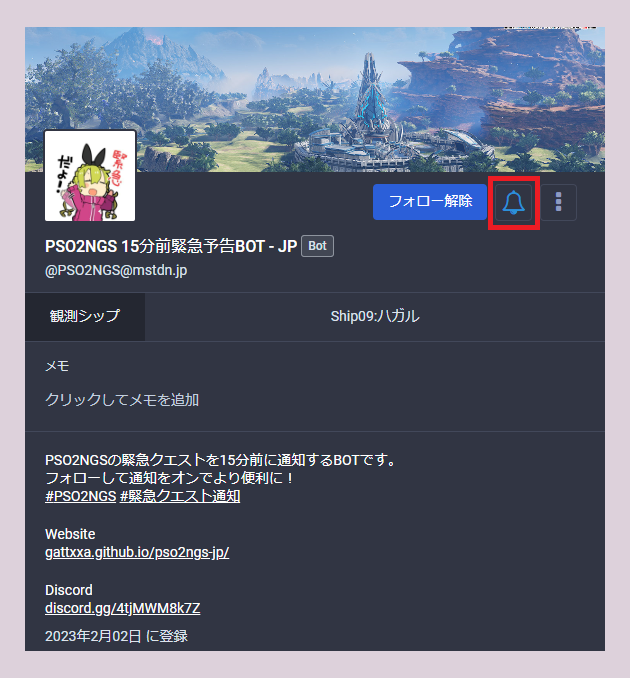
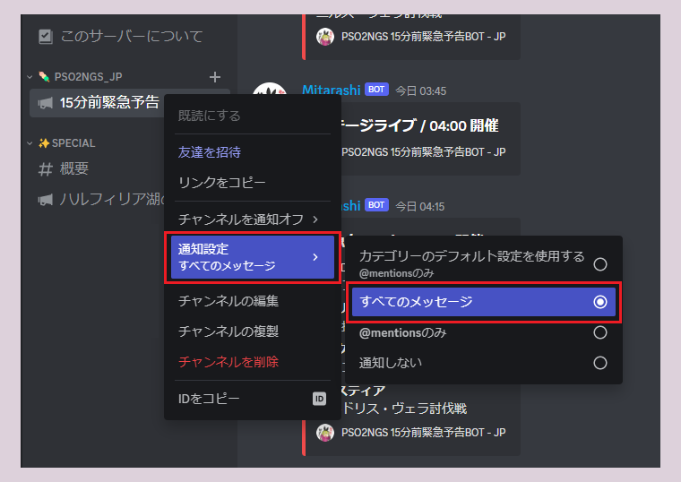
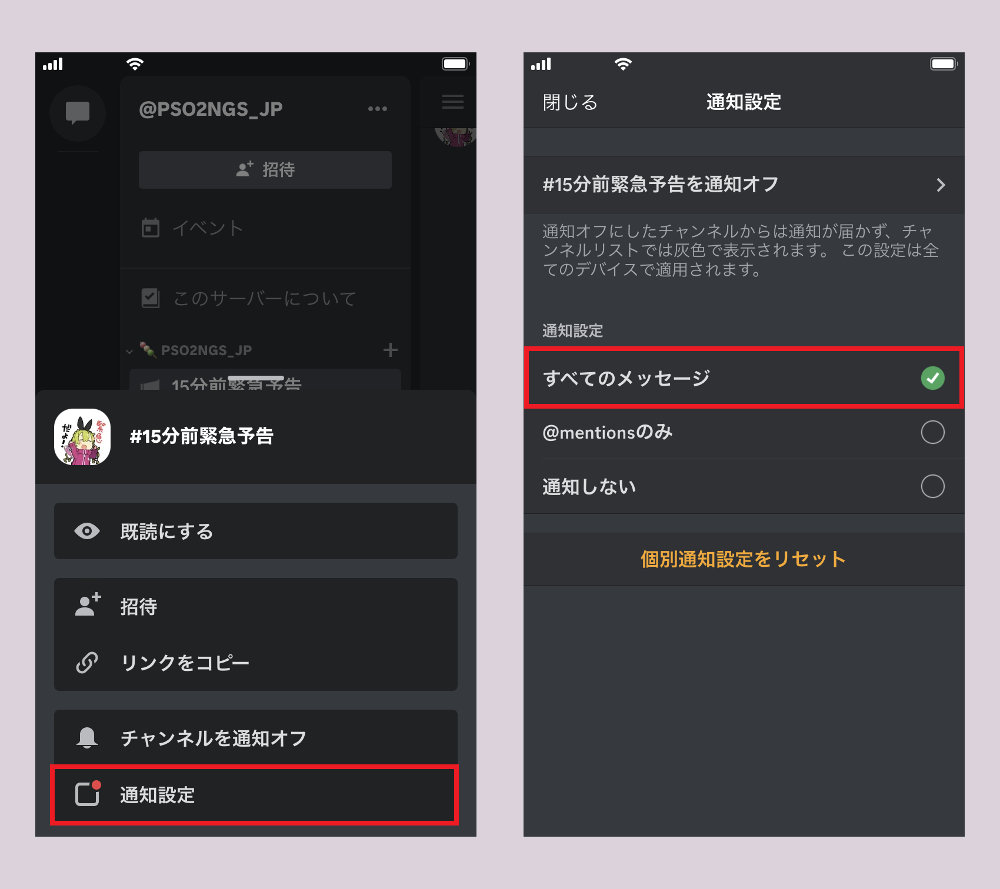
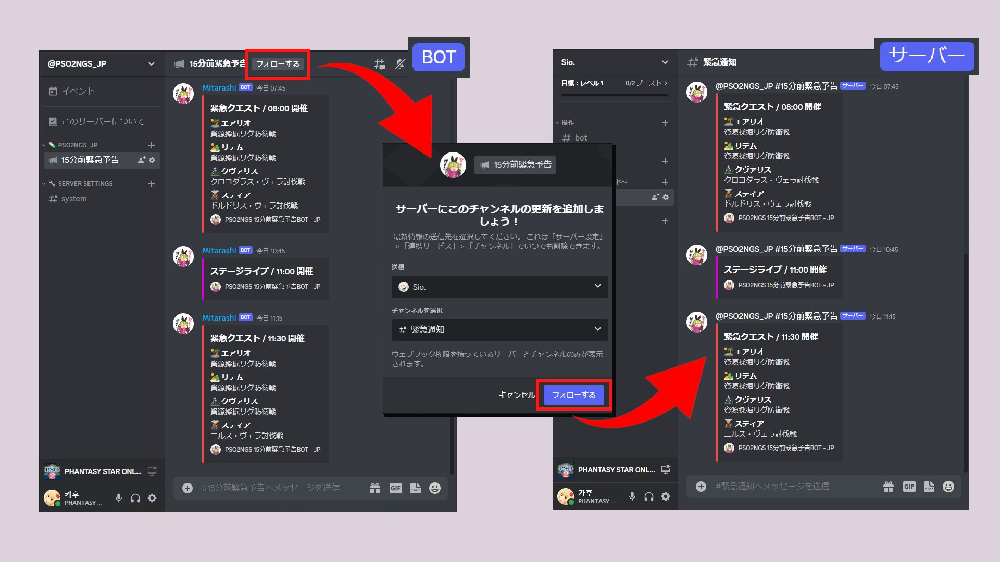

Twitterのような感覚で使えるSNSです。
Twitterユーザーの間では数年前から「移住するなら」の選択肢として挙がっていました。
Mastodonには『インスタンス』という概念が存在しており、
これはPSO2で言えば "所属シップのようなもの" ですが、
仕様として明確に違う点は "インスタンスを超えての交流が可能" な点です。
ここでの交流はフォローやリプライ、ブースト（RT）などといった行為を指します。
日本でメジャー / PSO2ユーザーにおすすめできるインスタンスは以下です。
・mstdn.jp 正統派な総合
・pawoo.net 『創作活動』と『自由なコミュニケーション』
・eletusk.club ファンタシースター関連特化
インスタンスは探せばいくらでもあるので、自分に合うインスタンスを見つけてみてください。
Mastodonには "タイムラインが３つ存在する" のでそちらも紹介します。
ホームタイムライン
・『自分がフォローしている人』
ローカルタイムライン ※公開設定のトゥートのみ
・『そのインスタンスに所属している全員』
連合タイムライン ※公開設定のトゥートのみ
・『そのインスタンスに所属している全員』
・『そのインスタンスに所属している人がリモートフォローしている人』
ここまでで「よくわからない……」という方は以下のページが参考になると思います。
流行中のSNS「Mastodon」の「インスタンス」って何？
文字で読んでもよく分からないので絵にしてみた - ITmedia NEWS
https://www.itmedia.co.jp/news/articles/1704/19/news121.html
～Mastodon経由の通知受け取りは、『Twitterからの移住を考えている方におすすめ』です～
通知の受け取り方
※PCの場合
フォローして通知をオンにすることで設定できます。

PC / スマホ / タブレット で使用可能なゲーマー向けチャットサービスです。
『テキストチャット』や『ボイスチャット』を行うことが主な使用用途です。
Discordでは会員登録後『サーバー』に入ることが必要になります。
複数のサーバーに入り、適切なチャンネルで交流を楽しむ……。
例：PSO2NGS Global Official Disocrd ( https://discord.gg/JycPC6RJun ) ※公式・海外向け
日本ではシップごとに有志が30~200人規模のサーバーを運営したりもしています。
気になった方は調べてみるのをおすすめします。
15分前緊急予告BOTが運営するDiscordサーバーは交流用のサーバーではないため、
『テキストチャット』や『ボイスチャット』の利用に制限が掛けられています。
圧倒的に通知に特化しており、「ハルフィリア湖の戦い」のような需要が高い緊急は、
個別に通知を受け取ることができるような施策も行っています。
～Discord経由の通知受け取りは、『賢く通知を受け取りたい方におすすめ』です～
→ https://discord.gg/4tjMWM8k7Z
通知の受け取り方
※PCの場合
通知を受け取りたい対象のチャンネルを右クリックから設定できます。

※スマートフォン/タブレットの場合
通知を受け取りたい対象のチャンネルを長押しから設定できます。

自分のサーバーに緊急予告メッセージを掲載する
チーム用Discordサーバーなどに通知を流したいという需要を考え、
15分前緊急予告BOTのサーバーではメッセージの横流しをサポートしています。
※PCの場合
